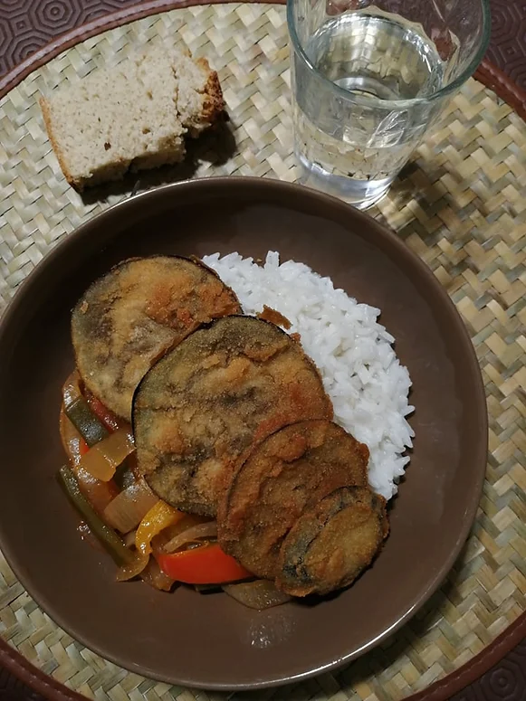

Cebolada de Pimentos e Beringela Panada
Tempo de preparação
15min
Horas de Cozimento
20min
Tempo Total
35min
Porções
2

Ingredientes
Cebolada:
- 2 cebolas grandes cortadas às rodelas
- 3 pimentos pequenos cortados ás tiras
- 5 vagens cortadas às tiras
- sal q.b
- azeite q.b
- vinagre de sidra q.b
- polpa de tomate q.b
- 1 folha de loureiro pequena
- 1 ccf de massa de pimentão
Beringela Panada:
- 1 beringela cortada às rodelas
- 1 copo de água
- farinha de trigo q.b
- sal q.b
- pimenta preta q.b
- alho em pó q.b
- pimentão doce q.b
- pão ralado q.b
- óleo q.b
Instruções
- Prepare o arroz branco para servir com a cebolada quando começar a fritar os panados.
Cebolada de pimentos:
- Num tacho, coloque todos os ingredientes em frio: as cebolas, os pimentos, as vagens, o sal, um fio de azeite, o vinagre de sidra, a polpa de tomate, a folha de loureiro e cubra com água até tapar os legumes. Leve ao lume.
- Quando a cebolada começar a ferver junte a colher de café de massa de pimentão e abrande o lume.
Beringela Panada:
- Numa bacia coloque um copo de água e farinha aos poucos até ficar uma massa homogênea. Tempere com sal, pimenta preta, alho em pó e pimentão doce. Numa bacia ao lado coloque o pão ralado.
- Com uma mão passe as rodelas de beringela pela massa temperada, e com a outra mão pelo pão ralado. Faça este processo até as rodelas acabarem. Deixe por 3-5 minutos as rodelas no frigorífico para a mistura ficar mais consistente.
- Está na hora de fritar. Numa frigideira coloque o óleo e quando este estiver quente leve as berinjelas a dourar (5 a 8 minutos de cada lado). Prepare um prato com papel de cozinha para absorver o excesso de óleo.
- Monte o prato com arroz branco, a cebolada, a beringela panada e acompanhe com uma fatia de broa de milho!